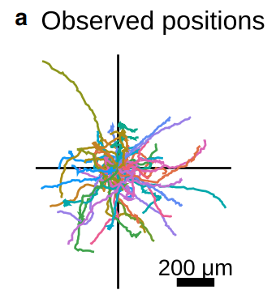
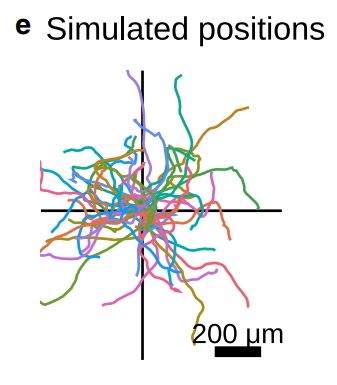
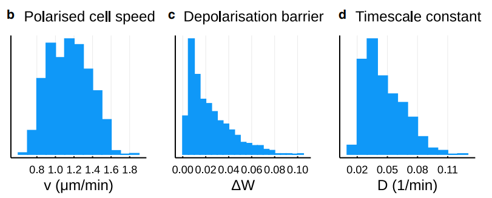
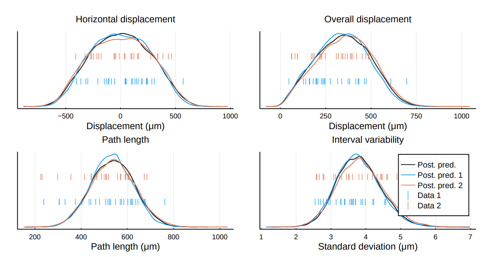

Dr Thomas Prescott
11th May 2022
For Hybrid Intelligence: Capgemini Engineering.
Zhao lab @ UC Davis School of Medicine:
Baker group @ Oxford Mathematical Biology:
... while ensuring mathematics is grounded in biology
julia)What is the characteristic cell speed, $v~\mathrm{\mu m / min}$?
What is the timescale parameter, $D~\mathrm{min}^{-1}$?
What is the energy barrier, $\Delta W = \beta/4$?
Model calibrated to existing data.
 Model calibration pipeline for future data.
Roadmap for future developments
Modelling contexts:
Roadmap for future developments
"Electric fields bias cell motility."
Reviewers' comments on biological mechanisms illustrate a difficult balance to maintain.
Techniques used included
Technical appendix follows.
Modelling framework based on the overdamped regime, reviewed in Camley and Rappel (2017).
For each cell $i \in \mathcal I$ we equate friction, \[ \gamma \dydx{\pos_i}{t} = \Fact_i + \Fcc_i, \] with the sum of active and cell-cell interaction forces.
Pairwise interactions modelled by a potential $V$, \[ \Fcc_i = - \pdydx{~}{\pos_i} \frac{1}{2} \sum_{j \neq i} V(|\pos_i - \pos_j|) \] with mid-range attraction and short-range repulsion.
Arises from polarity, which is modelled as an auxiliary (nondimensional) variable, $\pol_i$.
The direction the cell would "like" to move in.
$\Fact_i \propto \pol_i$.
The polarity is modelled to have its own dynamics.
\[\d \pos(t) = \Fact(t) \d t = v \pol(t) \d t\]
What is the characteristic cell speed, $v~\mathrm{\mu m / min}$?
What are the dynamics of $\pol$?
\[\d \pos(t) = \Fact(t) \d t = v \pol(t) \d t\]
\[ \d \pol(t) = -D \nabla W(\pol(t)) \d t + \sqrt{2D} \d \mathbf B(t) \]
What is the characteristic cell speed, $v~\mathrm{\mu m / min}$?
What is the timescale parameter, $D~\mathrm{min}^{-1}$?
What is the potential function, $W$?
\[\d \pos(t) = \Fact(t) \d t = v \pol(t) \d t\]
\[ \d \pol(t) = -D \nabla W(\pol(t)) \d t + \sqrt{2D} \d \mathbf B(t) \]
\[W(\pol) = \beta \left( \frac{1}{4} |\pol|^4 - \frac{1}{2} |\pol|^2 \right) \]
What is the characteristic cell speed, $v~\mathrm{\mu m / min}$?
What is the timescale parameter, $D~\mathrm{min}^{-1}$?
What is the energy barrier, $\Delta W = \beta/4$?
Comparing simulations with observations:
Simulated trajectories above were using parameter vectors drawn from a calibrated distribution:
Key is summary statistics that make data space suitably low-dimensional:
EG sampler: Markov Chain Monte Carlo. Others exist!
Stationary distribution of chain is an approximate posterior distribution in parameter space.